USER’S GUIDE
USER’S GUIDE
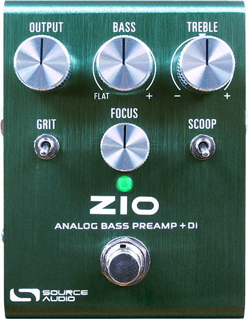
Welcome
Thank you for purchasing the ZIO Bass! ZIO Bass is an all-analog bass-tuned preamp & boost with audio, direct (XLR) and headphone outputs for ultimate flexibility when optimizing your bass rig. ZIO Bass utilizes the same high-quality, low-noise Burr Brown OP-amps as the original guitar-focused ZIO, expressly selected and tuned for maximum performance on bass. We reunited with our good friend and collaborator, Christopher Venter of SHOE Pedals, who worked on the original ZIO, Atlas Compressor, and other previous Source Audio effects to create this homage to the bass-playing tonal connoisseur.
ZIO Bass incorporates a fully featured EQ section, allowing the player to perfectly shape their bass’s low and high-end response. The BASS and FOCUS knobs are two highly interactive controls that define the tone of your note fundamentals: a 100Hz-boosting shelving and a sweeping high-pass filter create a custom peak response when combined. The TREBLE control is an active cut/boost shelf set to 1kHz focused on dampening or accentuating harmonic overtones. ZIO Bass also features two optional circuits: the GRIT and SCOOP toggle switches. GRIT introduces a warm, organic, transformer-style distortion caused by the effect “hysteresis”, the level of which can be set by the GAIN trim pot. SCOOP removes some lower midrange frequencies that have the potential to overpower the signal.
The word "ZIO" is an acronym for Impedance (Z), Input (I), and Output (O). The goal in creating this pedal remains the same: we wanted to “make everything sound better.” We hope you’ll agree.
—The Source Audio Team
Feature Overview
Up to +16dB of Output Boost – Boost your output level heading into your amplifier, interface, FOH, or other output destination.
Two +/- 12 V internal supply rails for maximum headroom and dynamic range.
Buffered Bypass – The ZIO features discrete, high-quality buffers for bypassing the signal path architecture, so each output is active whether the effect is engaged or bypassed.
Compact Design – The anodized bent aluminum housing, with its slim profile and small footprint, is built for the rigors of the road.
Discrete Analog Circuitry – ZIO Bass utilizes high-quality Burr Brown OP-amps, perfectly tuned for maximum performance.
Analog Distortion Section – Recreate transformer-style vintage amp distortion with the GRIT toggle switch. Fine-tune the amount of distortion with the adjustable trim pot on the pedal’s OUTPUT side.
Ultimate Low-End Sculpting – Use the “Bass” control (100Hz shelving boost) in conjunction with the “Focus” (high-pass filter) control to have the final say in the shape, punch, and detail of the low end.
Discrete Headphone Output – ZIO Bass features an optional headphone output for silent home or on-the-go playing.
Direct XLR Output – ZIO Bass features a direct balanced XLR Output for easy connectivity to an audio interface, mixing console, PA, or other destination that utilizes a balanced connection. This output has phantom power protection.
Connecting the Pedal
Power
To power the unit, connect a 9V DC negative-tipped power supply to the jack labeled DC 9V on the back panel. When not using the headphone output, the ZIO Bass draws about 140mA. When using the headphone output, the current draw is about 200mA.
Warning: Using an unregulated supply could damage the unit. Please be very cautious when using 3rd-party power supplies and refer to the power supply requirements in the Specifications section of this guide.
Input Side Connections
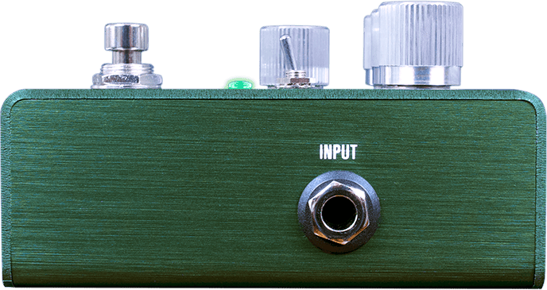
INPUT
INPUT is the primary input for your bass or other instruments. It can also accept line-level inputs and will work in your amp’s effect loop. Connect it to your instrument or other audio source using an unbalanced mono (TS) 1/4” cable.
Output Side Connections
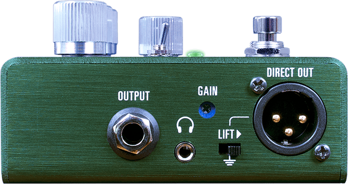
Main OUTPUT
This is the primary audio output. Connect it to your amplifier, recording interface, or the next device in your effects signal chain using an unbalanced mono (TS) ¼” cable.
Headphone Output
The headphone output features a high dynamic range, low-noise amplifier that is capable of driving low impedance studio headphones. This is a 1/8” (or 3.5mm) TRS output. Note: the Headphone Output is only active when in use. Using the Headphone Output draws roughly 60mA of additional current, so using a power supply rated under 200mA may cause the ZIO Bass to malfunction.
DIRECT OUT
DIRECT OUT is a Balanced XLR Output and can act either as an auxiliary audio output or an output for connecting to a mixing console, PA, or audio interface. This output includes phantom power protection.
All three outputs can be used individually OR simultaneously with one another, both when the pedal is engaged and when it is bypassed.
Ground Lift Switch
If you are hearing any “hum” or loud buzzing while using the direct output, slide the LIFT switch to the right to lift the internal ground connection to the DIRECT OUT XLR jack. This switch only applies to the XLR Direct Output and will not have any effect on buzz or hum coming from either the instrument or headphone outputs.
GAIN Trim Pot
The GAIN Trim Pot only applies to when the GRIT switch is set to the ON (up) position, and is pre-set to add a moderate amount of distortion when GRIT is enabled (based on using a moderate output passive bass). You can adjust this setting with a small Phillips head screwdriver to give the GRIT circuit more or less drive, based on your instrument and preferences. Please note, setting this trim pot only applies to the GRIT switch and not the ZIO Bass’s overall gain level in your ecosystem.
Power Connections
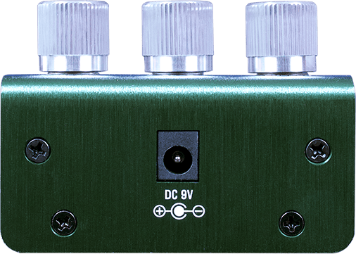
DC 9V (Power)
Connect the ZIO Bass to the included, or a pedalboard’s, 9 Volt DC power supply. The power supply must be regulated at 9 Volts DC (direct current), able to source at least 200 mA (milliamps) of current, and the plug should have a tip-negative, barrel-positive polarity.
The unit’s high voltage internal rails and specialized circuit requires more power than typical analog pedals. The high-performance headphone amplifier also adds to the power consumption when in use.
Note: Unlike the original guitar-focused ZIO pedal, the ZIO Bass is not intended for use at higher voltages. Please do NOT use 12V, 18V, etc. power supplies, or risk damaging the pedal and voiding the warranty.
High Voltage = High Headroom
You may have noticed the ZIO Bass has a higher current draw (~140–200mA) compared with most other analog effects pedals. The main reason for this is because ZIO Bass utilizes two high-voltage internal rails (+/- 12V each) to boost the pedal’s internal voltage up to 24V. Due to this, there is no reason to power your ZIO Bass with supplies higher than 9 Volts.
With the internal circuitry running at 24V, ZIO Bass is capable of much higher “clean” headroom (maximum signal level before the circuitry starts to clip and distort naturally) than traditional stompboxes. This is particularly noteworthy when using active pickups, since the output of these pickups often far exceeds that of traditional “passive” pickups.
Controls
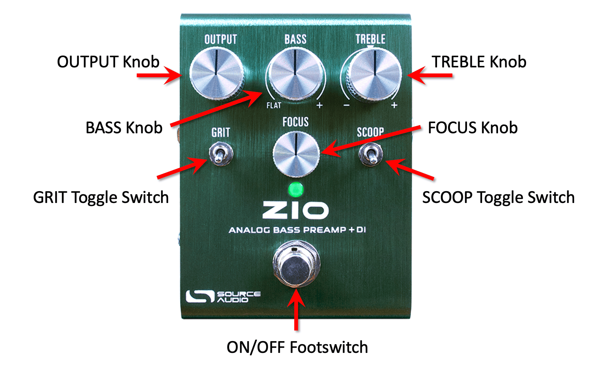
OUTPUT Knob
Think of this knob as a master volume control. Rotate this knob to boost your signal +16 dB or cut your signal by about -6dB. In addition to a powerful clean boost, the OUTPUT knob can also be used to turn the ZIO Bass into an “underdrive” when set to a gain level lower than the bypass signal.
BASS Knob
The BASS Knob is a low-end boost and is a shelving filter centered at 100Hz. The BASS knob starts as flat (no boost or cut to any frequencies) at fully counterclockwise. That means this control can only boost your bass frequencies, it is not capable of cutting or lowering any low end. The BASS knob, when rotated fully clockwise, boosts bass by +11dB.
Below are spectrum analysis figures showing all control knobs at Noon, followed by the BASS knob at 9 o’clock, followed by the BASS knob at 3 o’clock.

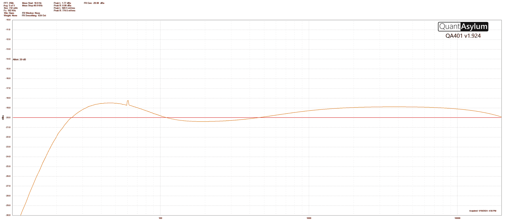
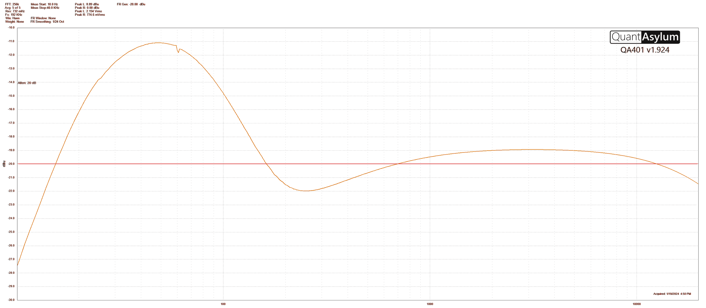
TREBLE Knob
The TREBLE knob is also a shelving filter, this time situated at 1kHz. However, the “flat” position (no boost or cut) on the TREBLE knob is at noon on the dial, and indicated by a small arrow indicator. The TREBLE control boosts 1kHz & above by +14dB at maximum (fully clockwise) rotation, and cuts 1kHz & above by -6dB at minimum (fully counterclockwise).
Shown below are spectrum analysis charts of the TREBLE control, starting with all controls flat, then TREBLE at minimum, followed by TREBLE at maximum.
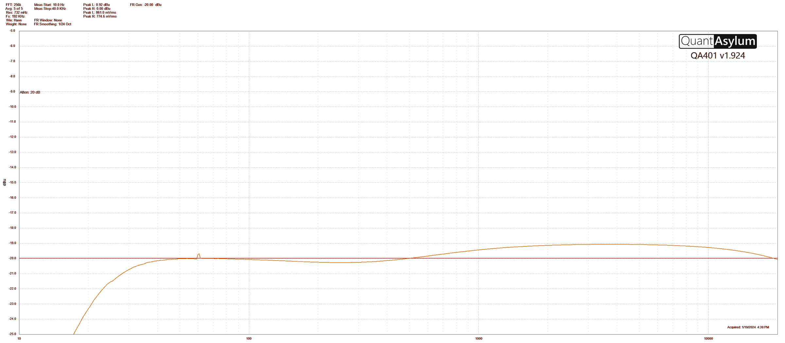
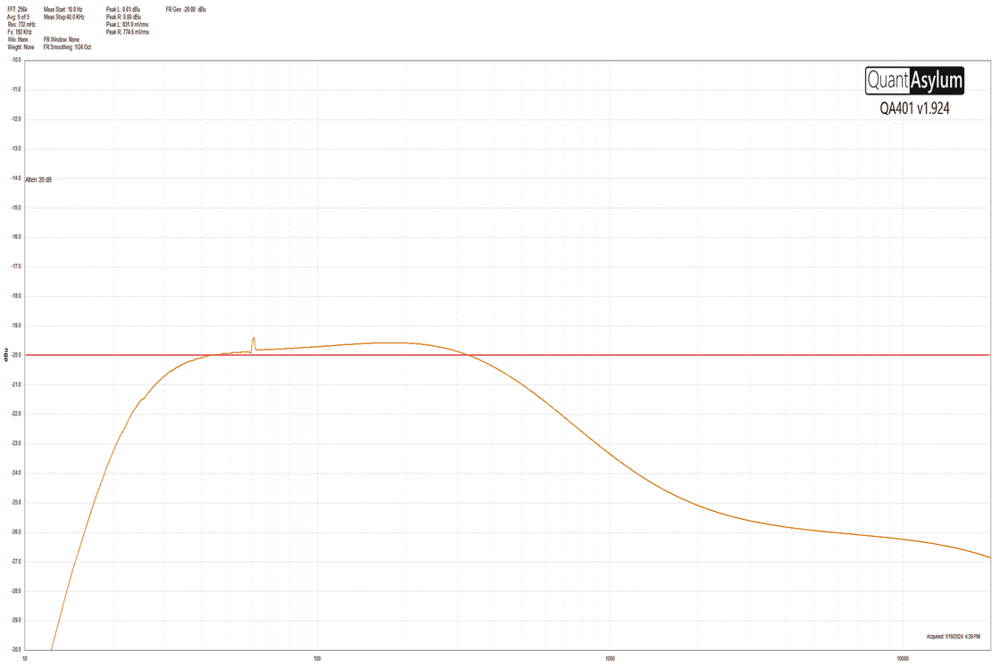
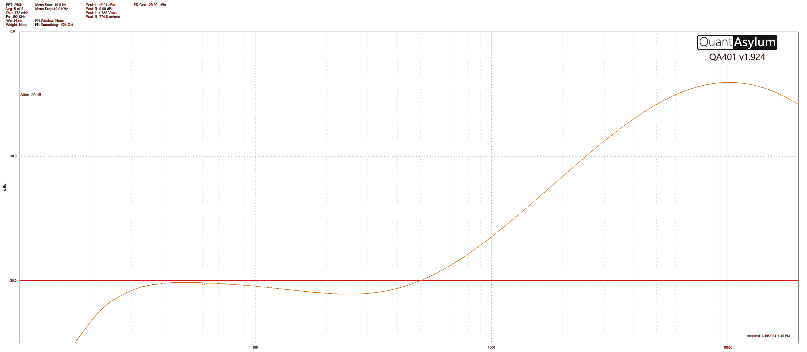
GRIT Toggle Switch
The GRIT Toggle Switch is a 2-way ON/OFF toggle switch. Flip to the ON (up) position to introduce a vintage bass amp transformer-like distortion.
Adjusting GRIT Gain with External Trim Pot
See Output Side Connections to locate the external GRIT Gain control trim pot. With a small Phillips head screwdriver, you can change the amount of distortion delivered by the GRIT toggle switch when set ON. In the stock configuration, the GRIT Gain trim pot is set to a medium amount of distortion, but of course, the amount of drive or grit you will hear will also depend on other factors such as your bass’s own signal strength, pickup height and output, amp headroom, and other pedals or effects raising or lowering the signal. Thus, you can tweak the GRIT Gain trim pot for more or less gain to your liking. The trim pot functions like a normal potentiometer: turn clockwise for more gain, counterclockwise for less gain.
Please note: the GRIT circuit is very interactive with the input signal of your bass or guitar. Thus, you may need to adjust the trim pot accordingly, depending on the output of your pickups and your gain preferences.
Below is a frequency spectrum comparison of the GRIT control OFF and the GRIT control ON. All other controls are set to flat.

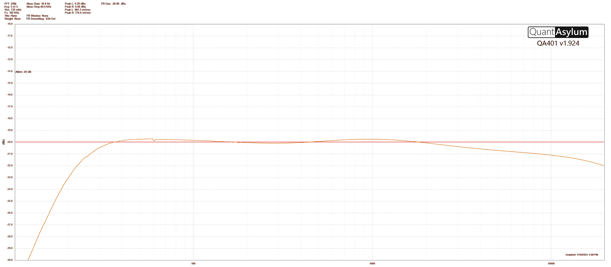
As you can see, there is not much of a tonal change when GRIT is enabled and all other controls are enabled, except for a minor treble fall-off beginning around 1100Hz.
FOCUS Knob
The FOCUS knob can be used in conjunction with the BASS knob for more detailed low-end contouring. The FOCUS knob is a high-pass filter control, which moves this bass-cutting filter to the right into higher frequencies on the frequency spectrum, so as you rotate it clockwise, more low-end will be cut. When the BASS control is active, using the FOCUS knob will peak the bass response, since we are pitting a movable HPF against a bass-boosting shelving filter fixed at 100Hz.
Here are spectrum analysis figures for the FOCUS knob function, starting with all controls flat, followed by the FOCUS at Noon (subtle high-pass filtering), followed by the FOCUS at maximum (pronounced high-pass filtering).

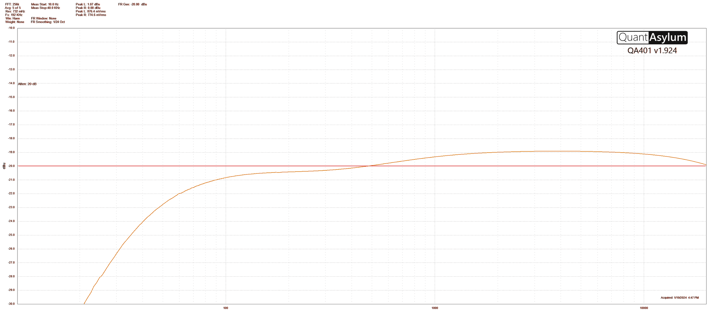
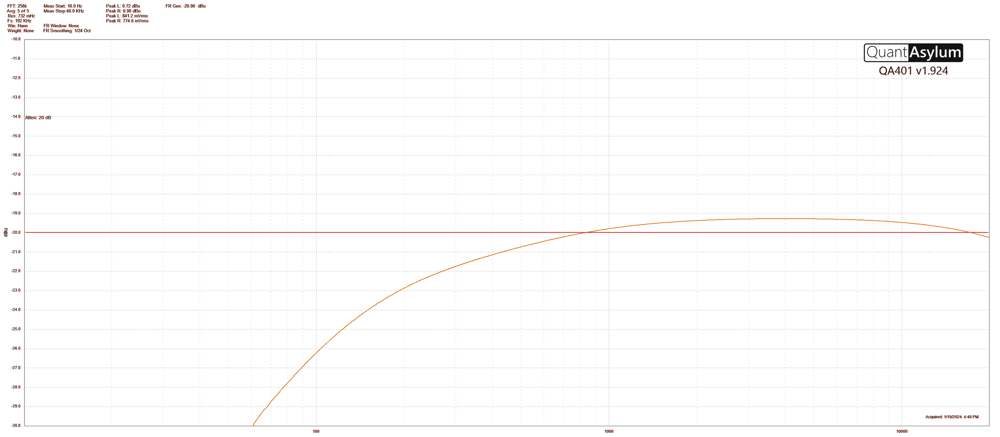
As seen above, the FOCUS control significantly shapes the low-end response of the pedal.
SCOOP Toggle Switch
The SCOOP Toggle Switch is a 2-way ON/OFF toggle switch. Flip to the ON (up) position to activate the mid-scoop circuit. This circuit is an emulation of the Pultec equalizing trick, similar to the “Studio” mode on the original guitar-focused ZIO: essentially a gentle low-mid cut to reduce “muddy” frequencies, countered by a very subtle bass boost centered at 40Hz, and a rather dramatic shift in the high frequencies, starting at 750Hz and peaking around 6kHz.
Shown below are frequency graphs of the SCOOP toggle switch in action, starting with flat (no SCOOP, all other controls flat), then SCOOP enabled.

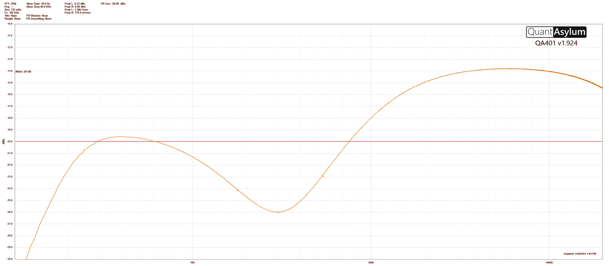
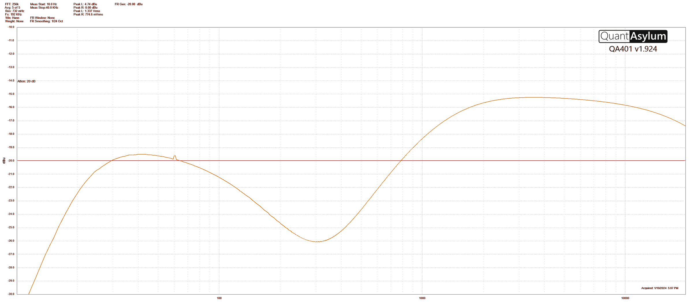
There is a mild interaction between GRIT and SCOOP which results in a smoothing out of the boosted treble frequencies with an earlier peak and a flatter curve. The severity of the treble boosting happening in the SCOOP circuit is reduced by just over 1dB when GRIT is enabled in this instance.
Specifications
Dimensions
- Length: 4.13 inches (105mm)
- Width: 3.07 inches (78mm)
- Height: 1.54 inches (39mm)
- Weight: 0.45kg / 1lbs
Power
- 140mA (without headphone output) / 200mA @ 9VDC
- Center negative, Barrel positive plug, 2.1 mm inner diameter, 5.5 mm outer diameter
Audio Performance
- Input Impedance: 1 Mega Ohm (1 MΩ)
- Main Output Impedance: 75 Ohm (75 Ω)
- XLR Output Impedance: 75 Ohm (75 Ω)
- Headphone Output Impedance: 42 Ohm (42 Ω)
- Maximum input headroom: +/-10V
- Active Analog Buffered Bypass
Troubleshooting
Noise/Hum
Power source: Ensure that the proper power supply is being used.
Near noise source: Move pedal away from power supplies and other equipment.
Other equipment: Remove other effects from signal chain; see if noise persists.
Bad cables: Swap out audio cables.
Ground loop with amp: Make sure your ZIO Bass is running on the same power mains circuit as your guitar amplifier.
While using DIRECT OUT: Try flipping the Ground Lift switch to the right if you are experiencing excess noise while using the DIRECT OUT XLR connection.
Unit Appears Dead / No LED Lit
Wrong power supply: Use correct power supply. See the DC 9V (Power) section for more details.
Frequently Asked Questions
What kind of instruments can I connect to the ZIO Bass’s inputs?
ZIO Bass is specialized for bass players, but can work with guitars, synths, and any number of alternate electric instruments. ZIO Bass is designed to work with any number of different types of basses, including both active and passive basses, as well as synthesizers, since the input headroom is relatively high.
Does ZIO Bass feature phantom power protection?
Yes, the ZIO Bass uses Zener diodes for protection from phantom power.
Can I use the ZIO Bass in my amp’s effects loop?
The ZIO Bass audio inputs can handle up to 8.76 dBu or 6.0 Volts peak-to-peak, which allows it to work in most amp effects loops. Be sure to check your amp’s documentation to verify that the maximum send level is less than the ZIO Bass’s maximum input level.
Rubber Feet
The ZIO Bass comes standard with a flat aluminum bottom, making it easy to apply Velcro and mount to a pedalboard. Additionally, adhesive rubber feet are included in the ZIO Bass box. Applying the rubber feet to the ZIO Bass can help prevent it from sliding on flat surfaces such as a hardwood floor.
Waste Disposal Notes

If possible, dispose of the device at an electronics recycling center. Do not dispose of the device with the household waste.
For full compliance with EN 61000-4-6 standard, input cable must be less than 3 meters in length.
Warranty
Register your Source Audio ZIO Bass & other products here!
https://www.sourceaudio.net/warrantyregistration.html
Limited Transferrable Warranty
Source Audio, LLC (hereinafter “Source Audio”) warrants that your new Source Audio ZIO Analog Bass Preamp + D.I., when purchased at an authorized Source Audio dealer in the United States of America (“USA”), shall be free from defects in materials and workmanship under normal use for a period of two (2) years from the date of purchase by the original purchaser. Please contact your dealer for information on warranty and service outside of the USA.
Under this Limited Warranty, Source Audio’s sole obligation and the purchaser’s sole remedy shall be repair, replacement, or upgrade, at Source Audio’s sole discretion, of any product that, if properly used and maintained, proves to be defective upon inspection by Source Audio. Source Audio reserves the right to update any unit returned for repair and to change or improve the design of the product at any time without notice. Source Audio reserves the right to use reconditioned parts and assemblies as warranty replacements for authorized repairs. Any product repaired, replaced, or upgraded pursuant to this Limited Warranty will be warranted for the remainder of the original warranty period.
This Limited Warranty is extended to the original retail purchaser. This Limited Warranty can be transferred to anyone who may subsequently purchase this product provided that such transfer is made within the applicable warranty period and Source Audio is provided with all of the following information: (i) all warranty registration information (as set forth on the registration card) for the new owner, (ii) proof of the transfer, within thirty (30) days of the transfer, and (iii) a photocopy of the original sales receipt. Warranty coverage shall be determined by Source Audio in its sole discretion. This is your sole warranty. Source Audio does not authorize any third party, including any dealer or sales representatives, to assume any liability on behalf of Source Audio or to make any warranty on behalf of Source Audio.
Warranty Information
Source Audio may, at its option, require proof of the original purchase date in the form of a dated copy of the original authorized dealer’s invoice or sales receipt. Service and repairs of Source Audio products are to be performed only at the Source Audio factory or a Source Audio authorized service center. Prior to service or repair under this Limited Warranty, the purchaser must request from Source Audio a return authorization, which is available at:
Source Audio LLC
120 Cummings Park, Woburn, MA 01801
(781) 932-8080 or at www.sourceaudio.net
Unauthorized service, repair, or modification will void this Limited Warranty.
Disclaimer and Limitation of Warranty
Do not open the effects pedal under any circumstance. This will void the warranty.
The foregoing limited warranty is the only warranty given by Source Audio and is in lieu of all other warranties. All implied warranties, including warranties of merchantability and fitness for any particular purpose, exceeding the specific provisions of this limited warranty, are hereby disclaimed and excluded from this limited warranty. Upon expiration of the applicable express warranty period, Source Audio shall have no further warranty obligation of any kind, express or implied. Source Audio shall in no event be liable for any special, incidental, or consequential damages suffered by the purchaser or any third party, including without limitation, damages for loss of profits or business or damages resulting from use or performance of the product, whether in contract or in tort. Source Audio shall not be liable for any expenses, claims, or suits arising out of or relating to any of the foregoing. Some states do not allow the exclusion or limitation of implied warranties so some of the above limitations and exclusions may not apply to you. This Limited Warranty gives you specific legal rights, and you may also have other rights, which vary from state to state. This Limited Warranty only applies to products sold and used in the USA. Source Audio shall not be liable for damages or loss resulting from the negligent or intentional acts of the shipper or its contracted affiliates. You should contact the shipper for proper claims procedures in the event of damage or loss resulting from shipment.
Version History
January 9, 2024: Initial release
Insert Card
ANALOG BASS PREAMP + DI
The Bass ZIO is an ultra-low noise all-analog preamp and DI for bass. It uses high voltage internal rails (+/-12V) for maximum headroom from a 9V supply input. The Bass ZIO features a simple but flexible set of tone shaping controls and an additional GRIT control for added tonal color. The Bass ZIO can be used directly with headphones for practice and monitoring or as a direct input using the balanced XLR output for connection to a mixer or audio interface.
CONTROLS
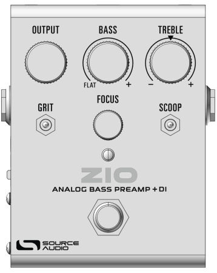
OUTPUT – Clean signal gain control from -6dB to +16dB.
BASS – Bass shelving filter centered at 100Hz ranges from flat in the min position to +11dB of gain at the max.
TREBLE – Treble shelving filter centered at 1kHz ranging from -6dB at the min position to +14dB at the max. Note that “flat” is at center of the knob range.
GRIT – Enables a mild distortion to mimic the transformer-style breakup from high-end bass amps. Note the gain can be adjusted for more or less distortion. The “up” position is on.
FOCUS – A high pass filter for reducing the lowest bass frequencies. Use this knob in conjunction with the BASS control to “focus” the peak of the bass shelving filter.
SCOOP – This control provides a special mid cut to clean up “muddy” mid-range frequencies. The cut profile is based on the classic ‘Pultec Trick’ from the Pultec® equalizer. Set the toggle “up” to enable.
FOOTSWITCH – The Bass ZIO is not a true bypass pedal by design. When bypassed, the tone controls and output gain are disabled but the three outputs: Main Output, Headphones, and Direct Out remain active.
GAIN (side adjustment) – this “trimmer” control can be adjusted with a small screwdriver from the unit side. We have preset the trimmer for a moderate amount of gain with an average output passive bass. If you’re using the Bass ZIO with a high output active bass or a lower output passive bass, you can adjust the gain up or down to taste with this control.
CONNECTIONS
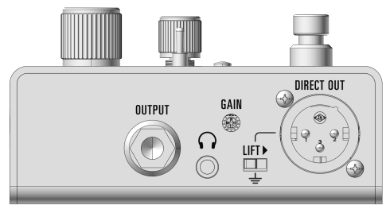
MAIN OUTPUT (unbalanced) – Connect to your amp or pedalboard.
DIRECT OUT – Connect the Bass ZIO directly to a mixer or audio interface using an XLR cable for recording or live sound applications. This is a balanced output signal.
HEADPHONE OUTPUT – The headphone output features a high dynamic range, low-noise amplifier that is capable of driving low impedance studio headphones.
LIFT – If you’re getting “hum” on the direct output, slide the LIFT switch to the right to lift the internal ground connection to the DIRECT OUT XLR jack.
POWER
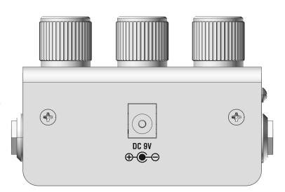
POWER – Power the Bass ZIO using the included 9V supply or a pedalboard power supply. Note that the supply should be able to source up to 200mA of current. The unit’s high voltage rails and specialized circuit requires more power than typical analog pedals. The high-performance headphone amplifier also adds to the power consumption when in use. Using a higher voltage than 9V is not recommended. Without headphones, the base current draw is around 140mA.